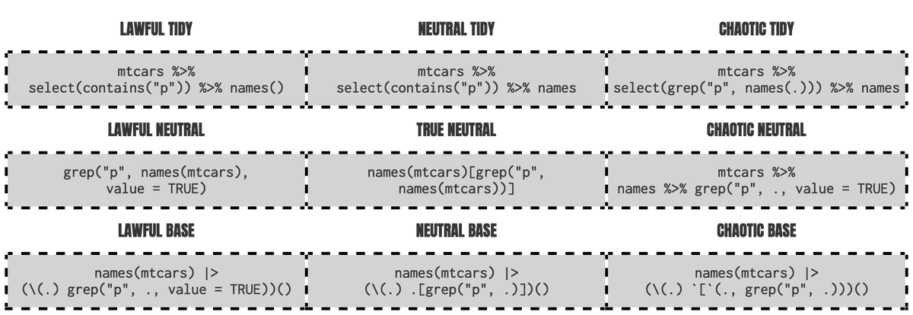
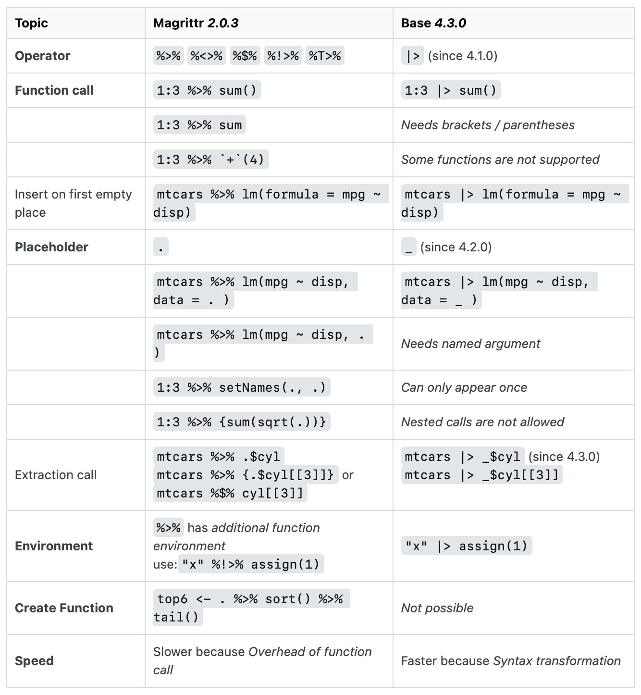

Base R
Misc
Packages
- {poorman} - Dependency free versions of {dplyr} verbs that help you solve the most common data manipulation challenges
Magrittr + base
mtcars %>% {plot(.$hp, .$mpg)} mtcars %$% plot(hp, mpg)- By wrapping the RHS in curly braces, we can override the rule where the LHS is passed to the first argument ## Options {#sec-r-baser-opts .unnumbered}
Remove scientific notation
options(scipen = 999)Wide and long printing tibbles
# in .Rprofile makeActiveBinding(".wide", function() { print(.Last.value, width = Inf) }, .GlobalEnv)- After printing a tibble, if you want to see it in wide, then just type .wide + ENTER.
- Can have similar bindings for `.long` and `.full`.
Heredocs - Powerful feature in various programming languages that allow you to define a block of text within the code, preserving line breaks, indentation, and other whitespace.
text <- r"( This is a multiline string in R)" cat(text)Selective function importing (R \(\ge\) 4.0) (source)
library(stringr, include.only = c("str_extract", "str_remove"))Super Assignment (
<<-)- It never creates a variable in the current environment, but instead modifies an existing variable found in a parent environment
- If
<<-doesn’t find an existing variable, it will create one in the global environment. - Most often used in conjunction with a function factory (See Advanced R, Sect. 10.2.4)
Downloading, Reading, and Writing
Downloading and reading .rda and .RData via URL
# option 1 pop_url <- url("https://raw.githubusercontent.com/edzer/sdsr/main/data/ch12.rda") load(pop_url) # option 2 url <- "https://raw.githubusercontent.com/edzer/sdsr/main/data/ch12.rda" destfile <- tempfile(fileext = ".rda") download.file(url, destfile, mode = "wb") load(destfile) # option 3 dat_de_pop <- local({ load(url("https://raw.githubusercontent.com/edzer/sdsr/main/data/ch12.rda"), envir = environment()) if (length(ls()) > 1) { mget(ls()) } else { get(ls()[1]) } })loadwill not allow you to assign the loaded object to a name of your choosing, i.e.moose <- load(moose.rda)will not work.localcreates a temporary evaluation environment and ensures no stray variables remain in your workspaceload(..., envir = environment())loads the.rdacontents into the local environment created bylocalls(e)[1]retrieves the (first) object name that was loaded into the local environment.getextracts the actual object from that environment.mgetaccepts a character vector of object names. So, if the .rda file contains multiple objects, this function will load them all in a list.
Download multiple files
urls <- c("https://ereporting.blob.core.windows.net/downloadservice/NL_8_28027_2017_timeseries.csv", "https://ereporting.blob.core.windows.net/downloadservice/NL_8_28145_2017_timeseries.csv" ) dest_dir <- "C:/Users/user/Documents/R/Data/no2/raw" dir.create(dest_dir, recursive = TRUE, showWarnings = FALSE) dest <- file.path(dest_dir, basename(urls)) # Download with a polite delay between requests for(i in seq_along(urls)) { download.file(urls[i], destfile = dest[i], mode = "wb") # windows # Wait 1-2 seconds between downloads if(i < length(urls)) { Sys.sleep(1) } }Reading in zipped files (source)
# unz() lets you read one file from a .zip one_zipped_csv_among_others <- readr::read_csv( unz("lotsa_zipped_csvs.zip", "one_csv.csv") ) # .zip with a single CSV one_zipped_csv <- readr::read_csv("big_zipped_file.zip")
User Defined Functions
Anonymous (aka lambda) functions:
\(x) {}(> R 4.1)function(x) { x[which.max(x$mpg), ] } # equivalent to the above \(x) { x[which.max(x$mpg), ] }Define and call an anonymous function at the same time
n <- c(1:10) moose <- (\(x) x+1)(n) moose #> [1] 2 3 4 5 6 7 8 9 10 11Dots (…)
Misc
Usage with UDFs
1dots <- list(...) init_boot_args <- list(data = dynGet("data"), stat_fun = cles_boot, # internal function group_variables = group_variables, paired = paired) get_boot_args <- append(init_boot_args, dots) 2grp_tbl <- .tbl %>% dplyr::group_by(...) 3.data |> dplyr::reframe({{ array_name }} := purrr::pmap(list(!!!dots), ~list(...)), .by = {{ .grp_var }})- 1
- From {ebtools::get_boot_ci}
- 2
- From {ebtools::add_mase_scale_feat}
- 3
- From {ebtools::to_json_array}
Tests
moose <- function(...) { dots <- list(...) dots_names <- names(dots) if (is.null(dots_names) || "" %in% dots_names { stop("All arguments must be named") } dots <- rlang::enquos(..., .named = TRUE) # group column(s) required chk::chk_not_empty(dots, x_name = "... (group columns)") accepted_styles <- c("W", "B", "C", "S", "U", "minmax", "raw") dots <- list(...) # Check if "style" is provided in ... and validate if ("style" %in% names(dots)) { chk::chk_subset(dots$style, accepted_styles, x_name = "style") } }Nested Functions
f02 <- function(...){ vv <- list(...) print(vv) } f01 <- function(...){ f02(b = 2,...) } f01(a=1,c=3) #> $b #> [1] 2 #> #> $a #> [1] 1 #> #> $c #> [1] 3Subset dots values
add2 <- function(...) { ..1 + ..2 } add2(3, 0.14) # 3.14Subset dots dynamically:
...elt(n)- Set a value to n and get back the value of that argument
Number of arguments in … :
...length()
Functions
aggregateaggregate(x, by, FUN)- Can also take a formula,
x ~ group - drop = TRUE means that any groups with zero count are removed.
- na.action controls the treatment of missing values within the data.
- Can also take a formula,
Mean for combinations of two groups
aggregate(df$points, by=list(df$team, df$position), FUN=mean) #> Group.1 Group.2 x #> 1 A F 86.0 #> 2 B F 97.0 #> 3 A G 94.5 #> 4 B G 88.0Count distinct values per group (source)
data("mtcars") group_counts <- aggregate( data = mtcars, carb ~ cyl, FUN = function(x) length(unique(x)) ) group_counts #> cyl carb #> 1 4 2 #> 2 6 3 #> 3 8 4- cyl and carb are discrete
- Groups by the cyl variable and applies the
lengthanduniqueto count the number of distinct carb per cyl group
Adding function arguments
dat <- aggregate(tserie ~ month(index(tserie)), FUN = quantile, probs = c(0.05, 0.95)) colnames(dat)[1] <- "Month" dat #> Month V1.5% V2.95% #> 1 -1.7041221 1.2301178 #> 2 -0.9388331 1.7888182 #> 3 -1.3886001 1.5261942 #> 4 -1.0834517 1.5697239 #> 5 -1.6527890 1.0883061 #> 6 -1.4064641 2.1472166Sum of multiple variables for combinations of groups (source)
exposures <- aggregate(x = assets[c("counterparty.a", "counterparty.b", "counterparty.c")], by = assets[c("asset.class", "rating")], FUN = function(market.values){ sum(pmax(market.values, 0)) }) exposures #> asset.class rating counterparty.a counterparty.b counterparty.c #> 1 bond A 1.0038714 0.6382029 2.2822936 #> 2 equity A 0.9841620 1.5178126 0.7745532 #> 3 bond AAA 0.0000000 0.0000000 0.0000000 #> 4 equity AAA 0.9026004 0.6029417 0.8629453
aveSort of
group_by+mutate(source)x <- c(1, 2, 3, 1, 2, 3, 3, 3) y <- c(1, 1, 1, 1, 2, 2, 2, 2) # ~~~~~~~~~~~~~~~~~~~~~~~~~~~~~~~~~~~~~~~~~~~~~~~~~~~~~~~~~~~~~ # 1. Sum over `x` using `y` as a 'grouping' variable # ~~~~~~~~~~~~~~~~~~~~~~~~~~~~~~~~~~~~~~~~~~~~~~~~~~~~~~~~~~~~~ ave(x, y, FUN = sum) #> [1] 7 7 7 7 11 11 11 11 # ~~~~~~~~~~~~~~~~~~~~~~~~~~~~~~~~~~~~~~~~~~~~~~~~~~~~~~~~~~~~~ # 2. Number of distinct elements in each group # ~~~~~~~~~~~~~~~~~~~~~~~~~~~~~~~~~~~~~~~~~~~~~~~~~~~~~~~~~~~~~ ave(x, y, FUN = dplyr::n_distinct) #> [1] 3 3 3 3 2 2 2 2 # ~~~~~~~~~~~~~~~~~~~~~~~~~~~~~~~~~~~~~~~~~~~~~~~~~~~~~~~~~~~~~ # 3. Number of times each element of `x` appears # ~~~~~~~~~~~~~~~~~~~~~~~~~~~~~~~~~~~~~~~~~~~~~~~~~~~~~~~~~~~~~ ave(x, x, FUN = length) #> [1] 2 2 4 2 2 4 4 4 # ~~~~~~~~~~~~~~~~~~~~~~~~~~~~~~~~~~~~~~~~~~~~~~~~~~~~~~~~~~~~~ # 4. Indicating how many times each element has occurred so far # ~~~~~~~~~~~~~~~~~~~~~~~~~~~~~~~~~~~~~~~~~~~~~~~~~~~~~~~~~~~~~ x <- c("a", "a", "b", "a", "b", "c") paste0(x, ave(x, x, FUN = seq_along)) #> [1] "a1" "a2" "b1" "a3" "b2" "c1"- Group by “1” and sum. So all the x values that have the same index as y = 1 sum to: 7 = 1 + 2 + 3 + 1. For each y = 1, that calculation is made, so there are 4 sevens.
- Group by “1” and find the number of distinct values. There are 3 distinct values of x when y = 1: 1, 2, and 3.
- x is used for each input. It counts how many times the value appears in the vector. 1 occurs twice, 2 occurs twice, and 3 occurs four times.
- Instead of a total like in the previous example,
seq_alongcreates a cumulative count for each value.
capture.outputStores the output from a print method
summ_wts <- capture.output(spdep:::print.listw(ls_wts)) cat(summ_wgts, sep = "\n")From {ebtools::add_spatial_lags}
print.listwprints a nice summary of spatial weights information but if you try to save it to a variable, it saves the actuall weight list object. So,capture.outputallows you to save the summary text.
do.call- allows you to call other functions by constructing the function call as a listArgs
- what – Either a function or a non-empty character string naming the function to be called
- args – A list of arguments to the function call. The names attribute of args gives the argument names
- quote – A logical value indicating whether to quote the arguments
- envir – An environment within which to evaluate the call. This will be most useful if what is a character string and the arguments are symbols or quoted expressions
Example: Apply function to list of vectors
vectors <- list(c(1, 2, 3), c(4, 5, 6), c(7, 8, 9)) combined_matrix <- do.call(rbind, vectors) combined_matrix ## [,1] [,2] [,3] ## [1,] 1 2 3 ## [2,] 4 5 6 ## [3,] 7 8 9Example: Apply multiple functions
data_frames <- list( data.frame(a = 1:3), data.frame(a = 4:6), data.frame(a = 7:9) ) mean_results <- do.call( rbind, lapply(data_frames, function(df) mean(df$a)) ) mean_results ## [,1] ## [1,] 2 ## [2,] 5 ## [3,] 8- First the mean is calculated for column a of each df using
lapplylapplyis supplying the data fordo.callin the required format, which is a list or character vector.
- Second the results are combined into a matrix with
rbind
- First the mean is calculated for column a of each df using
dynGetLooks for objects in the environment of a function.
When an object from the outer function is an input for a function nested around 3 layers deep or more, it may not be found by that most inner function.
dynGetallows that function to find the object in the outer frameArguments
minframe: Integer specifying the minimal frame number to look into (i.e. how far back to look for the object)
inherits: Should the enclosing frames of the environment be searched?
Example:
1function(args) { if (method == "kj") { ncv_list <- purrr::map2(grid$dat, grid$repeats, function(dat, reps) { rsample::nested_cv(dat, outside = vfold_cv(v = 10, repeats = dynGet("reps")), inside = bootstraps(times = 25)) }) } } 2function(data) { if (chk::vld_used(...)) { dots <- list(...) init_boot_args <- list(data = dynGet("data"), stat_fun = cles_boot, # internal function group_variables = group_variables, paired = paired) get_boot_args <- append(init_boot_args, dots) } cles_booted <- do.call( get_boot_ci, get_boot_args ) }- 1
- Example from Nested Cross-Validation Comparison
- 2
- Example from {ebtools::cles}
match.argPartially matches a function’s argument values to list of choices. If the value doesn’t match the choices, then an error is thrown
Example:
keep_input <- "input_le" keep_input_val <- match.arg(keep_input, choices = c("input_lags", "input_leads", "both"), several.ok = FALSE) keep_input_val #> [1] "input_leads"- several.ok = FALSE says only 1 match is allowed otherwise an error is thrown.
- The error message is pretty informative btw.
match.funExample
f <- function(a,b) { a + b } g <- function(a,b,c) { (a + b) * c } h <- function(d,e) { d - e } yolo <- function(FUN, ...) { FUN <- match.fun(FUN) params <- list(...) FUN_formals <- formals(FUN) idx <- names(params) %in% names(FUN) do.call(FUN, params[idx]) } yolo(h, d = 2, e = 3) #> -1
NegateCreates a negation of a given function. Can replace
!for easier recognition.Example: Removing NULLs from a list (source)
Filter( Negate(is.null), list(...) )
outerStands for “outer product” which is it’s default, but it doesn’t have to be a product. I can be any operation
Basic
outer(X = c(0, 5), Y = 1:5) # FUN = "*" by default #> [,1] [,2] [,3] [,4] [,5] #> [1,] 0 0 0 0 0 #> [2,] 5 10 15 20 25 outer(c(0, 5), 1:5, FUN = "+") #> [,1] [,2] [,3] [,4] [,5] #> [1,] 1 2 3 4 5 #> [2,] 6 7 8 9 10A row is the result of applying the function to an element of X and each element of Y
- e.g. The first row the outer product is 0 * 1, 0 * 2, 0 * 3, 0 * 4, 0 * 5.
Lags
dat <- data.frame(x = seq(1,5)) outer(-1:1, dat[which(dat$x == 3), ], `+`) #> [,1] #> [1,] 2 #> [2,] 3 #> [3,] 4 outer(-1:1, which(country == "Germany"), `+` )) #> [1] 2 14 19 25 26 28 33 38 39 62 65 66 92 93 #> [1] 3 15 20 26 27 29 34 39 40 63 66 67 93 94 #> [1] 4 16 21 27 28 30 35 40 41 64 67 68 94 95In the first situation, the first row is -1 plus the index for x = 3 (which is 3), so this give the index before the index of x = 3
In the second second situation, the first row is -1 plus the index for each instance of country == “Germany”, so it’s the previous row index.
- This second situation is something I plucked out of the middle of a chain of code, so it’s doesn’t make exact sense on it’s own. (See R, Snippets >> Cleaning >> Filter row index before/after a condition >> Example 2 for the complete code)
Each column of the matrix is the indexes for the before, actual, and after values for each instance of country == “Germany”.
This example doesn’t involve time, but you can see how each column could be a window of t-1, t, and t+1. Then window calculations can be done column-wise which is R’s forte. (See R, Snippets >> Calculations >> Time Series >> Base R >>Moving Windows for an example)
pminandpmaxFind the element-wise maximum and minimum values across vectors in R
Example
vec1 <- c(3, 9, 2, 6) vec2 <- c(7, 1, 8, 4) pmax(vec1, vec2) #> [1] 7 9 8 6 pmin(vec1, vec2) #> [1] 3 1 2 4Example: With NAs
data1 <- c(7, 3, NA, 12) data2 <- c(9, NA, 5, 8) pmax(data1, data2, na.rm = TRUE) #> [1] 9 3 5 12
sink- used to divert R output to an external connection.Use Cases: exporting data to a file, logging R output, or debugging R code.
Args
- file: The name of the file to which R output will be diverted. If file is NULL, then R output will be diverted to the console.
- append: A logical value indicating whether R output should be appended to the file (TRUE) or overwritten (FALSE). The default value is FALSE.
- type: A character string. Either the output stream or the messages stream. The name will be partially match so can be abbreviated.
- split: logical: if TRUE, output will be sent to the new sink and the current output stream, like the Unix program tee.
Example: Logging output of code to file
sink("r_output.log") # Redirect output to this file # Your R code goes here sink() # Turn off redirection- output file could also have an extension like “.txt”
Example: Debugging
sink("my_function.log") # Redirect output to this file my_function() sink() # Turn off redirectionExample: Appending output to a file
sink("output.txt", append = TRUE) # Append output to the existing file cat("Additional text\n") # Append custom text plain text sink() # Turn off redirection
switchExample: (source)
switch(parallel, windows = "snow" -> para_proc, other = "multicore" -> para_proc, no = "no" -> para_proc, stop(sprintf("%s is not one of the 3 possible parallel argument values. See documentation.", parallel)))- parallel is the function argument. If it doesn’t match one of the 3 values (windows, other, or no), then an error is thrown.
- If the argument value is matched, then the quoted value is stored in para_proc
withinEvaluate a R expression in an environment constructed from data, possibly modifying (a copy of) the original data.
- i.e. acts similar to
dplyr::mutateandtransformtransformcannot refer to variables previously created in the same transformation
- Docs also show putting boxplot code in the braces.
- i.e. acts similar to
Example: (source)
gw <- gw |> within({ dratio <- dia1.mm/dia2.mm dia <- ifelse(is.na(dia2.mm), dia1.mm, (dia1.mm + dia2.mm)/2) slend <- ht.cm / dia smoe <- 1.1 * v2104^2 gmoe <- 1.1 * vgreen^2 dmoe <- (bden / 1000) * 1.14 * vdry^2 })
Pipe

Benefits of base pipe
- Magrittr pipe is bloated with special features which may make it slower than the base pipe
- If not using tidyverse, it’s one less dependency (maybe one day it will be deprecated in tidyverse)
Base pipe with base and anonymous functions
# verbosely mtcars |> (function(.) plot(.$hp, .$mpg))() # using the anonymous function shortcut, emulating the dot syntax mtcars |> (\(.) plot(.$hp, .$mpg))() # or if you prefer x to . mtcars |> (\(x) plot(x$hp, x$mpg))() # or if you prefer to be explicit with argument names mtcars |> (\(data) plot(data$hp, data$mpg))()Using “_” placeholder:
mtcars |> lm(mpg ~ disp, data = _)mtcars |> lm(mpg ~ disp, data = _) |> _$coef
Base pipe .[ ] hack
wiki |> read_html() |> html_nodes("table") |> (\(.) .[[2]])() |> html_table(fill = TRUE) |> clean_names() # instead of djia <- wiki %>% read_html() %>% html_nodes("table") %>% .[[2]] %>% html_table(fill = TRUE) %>% clean_names()Magrittr, base pipe differences (source)
- magrittr:
%>%allows you change the placement with a.placeholder.- base: R 4.2.0 added a
_placeholder to the base pipe, with one additional restriction: the argument has to be named
- base: R 4.2.0 added a
- magrittr: With
%>%you can use.on the left-hand side of operators like$,[[,[and use in multiple arguments (e.g.df %>% {split(.$x, .$y)})- base: can hack this by using anonymous function
- See Base pipe with base and anonymous functions above
- See Base pipe
.[ ]hack above
- base: can hack this by using anonymous function
- magrittr:
%>%allows you to drop the parentheses when calling a function with no other arguments (e.g. dat %>% distinct)- base:
|>always requires the parentheses. (e.g.dat|> distinct()`)
- base:
- magrittr:
%>%allows you to start a pipe with.to create a function rather than immediately executing the pipe
- magrittr:
Purrr with base pipe
data_list |> map(\(x) clean_names(x)) # instead of data_list %>% map( ~.x %>% clean_names) # with split star |> split(~variable) |> map_df(\(.) hedg_g(., reading ~ value), .id = "variable") # instead of star %>% split(.$variable) %>% map_df(. %>% hedg_g(., reading ~ value), .id = "variable")
{kind=link}
Strings
Resources
- From base R - base R equivalents to {stringr} functions
sprintfx <- 123.456 # Create example data sprintf("%f", x) # sprintf with default specification #> [1] "123.456000" sprintf("%.10f", x) # sprintf with ten decimal places #> [1] "123.4560000000" sprintf("%.2f", x) # sprintf with two rounded decimal places #> [1] "123.46" sprintf("%1.0f", x) # sprintf without decimal places #> [1] "123" sprintf("%10.0f", x) # sprintf with space before number #> [1] " 123" sprintf("%10.1f", x) # Space before number & decimal places #> [1] " 123.5" sprintf("%-15f", x) # Space on right side #> [1] "123.456000 " sprintf("%+f", x) # Print plus sign before number #> [1] "+123.456000" sprintf("%e", x) # Exponential notation #> [1] "1.234560e+02" sprintf("%E", x) # Exponential with upper case E #> [1] "1.234560E+02" sprintf("%g", x) # sprintf without decimal zeros #> [1] "123.456" sprintf("%g", 1e10 * x) # Scientific notation #> [1] "1.23456e+12" sprintf("%.13g", 1e10 * x) # Fixed decimal zeros #> [1] "1234560000000" paste0(sprintf("%f", x), # Print %-sign at the end of number "%") #> [1] "123.456000%" sprintf("Let's create %1.0f more complex example %1.0f you.", 1, 4) #> [1] "Let's create 1 more complex example 4 you."Example: Add leading zeros (source)
numbers <- c(1, 23, 456) formatted_numbers <- sprintf("%05d", numbers) print(formatted_numbers) #> [1] "00001" "00023" "00456" mixed_input <- c(12, "abc", 345) formatted_mixed_input <- ifelse( is.na(as.numeric(mixed_input)), mixed_input, sprintf("%05d", as.numeric(mixed_input)) ) print(formatted_mixed_input) #> [1] "00012" "abc" "00345"
str2lang- Allows you to turn plain text into code.growth_rate <- "circumference / age" class(str2lang(growth_rate)) #> [1] "call"Example: Basic
eval(str2lang("2 + 2")) #> [1] 4 eval(str2lang("x <- 3")) x #> [1] 3Example: Run formula against a df
growth_rate <- "circumference / age" with(Orange, eval(str2lang(growth_rate))) #> [1] 0.25423729 0.11983471 0.13102410 0.11454183 0.09748172 0.10349854 #> [7] 0.09165613 0.27966102 0.14256198 0.16716867 0.15537849 0.13972380 #> [13] 0.14795918 0.12831858 0.25423729 0.10537190 0.11295181 0.10756972 #> [19] 0.09341998 0.10131195 0.08849558 0.27118644 0.12809917 0.16867470 #> [25] 0.16633466 0.14541024 0.15233236 0.13527181 0.25423729 0.10123967 #> [31] 0.12198795 0.12450199 0.11535337 0.12682216 0.11188369
agrep- Fuzzy Matching (source)Syntax
agrep( pattern, x, max.distance = 0.1, ignore.case = FALSE, value = FALSE, fixed = TRUE )- pattern: The string pattern you want to match
- x: The vector of strings to search within
- max.distance: The maximum allowed distance for a match
- If integer, then the integer is the number of characters that can be wrong
- If decimal, (0,1), then it’s the percentage of characters than can be wrong
- ignore.case: Whether to ignore case when matching
- value: Whether to return the matched values instead of indices
- fixed: Whether to treat the pattern as a fixed string or a regular expression
Examples
- 1
- The first string is missing an “a” and has a “c” where the “k” should be. Therefore, it’s within 2 characters of being correct which equals max.distance, so it gets matched. The output is 1 which indicates the first string.
- 2
- The first string is missing an “a”, has a “c” where the “k” should be, and has a “b” where a “d” should be. Therefore, it’s 3 characters away from being correct which is outside the max.distance. String 2 isn’t close, so nothing gets matched. The output is 0 which indicates the none of the vector indexes has a match.
- 3
- The first string has a “z” where the “s” should be and the second string matches exactly. The max.distance is a quarter of the pattern which is 1 character. Therefore, both strings get matched.
Conditionals
&& and || are intended for use solely with scalars, they return a single logical value.
- Since they always return a scalar logical, you should use && and || in your if/while conditional expressions (when needed). If an & or | is used, you may end up with a non-scalar vector inside if (…) {} and R will throw an error.
& and | work with multivalued vectors, they return a vector whose length matches their input arguments.
Alternative way of negating a condition or set of conditions:
if (!(condition))Makes it less readable IMO, but maybe for a complicated set of conditions if makes more sense in your head to do it this way
Example
if (!(nr == nrow(iris) || (nr == nrow(iris) - 2))) {print("moose")}
Using
else ifif (condition1) { expr1 } else if (condition2) { expr2 } else { expr3 }stopifnotpred_fn <- function(steps_forward, newdata) { stopifnot(steps_forward >= 1) stopifnot(nrow(newdata) == 1) model_f = model_map[[steps_forward]] # apply the model to the last "before the test period" row to get # the k-steps_forward prediction as.numeric(predict(model_f, newdata = newdata)) }%||%Collapse operator which acts like:
`%||%` <- function(x, y) { if (is_null(x)) y else x }- Says if the first (left-hand) input
xisNULL, returny. Ifxis notNULL, return the input
- Says if the first (left-hand) input
Use Cases
Determine whether a function argument is NULL
github_remote <- function(repo, username = NULL, ...) { meta <- parse_git_repo(repo) meta$username <- username %||% getOption("github.user") %||% stop("Unknown username") }Within the
printargument collapselibrary(rlang) add_commas <- function(x) { if (length(x) <= 1) { collapse_arg <- NULL } else { collapse_arg <- ", " } print(paste0(x, collapse = collapse_arg %||% "")) } add_commas(c("apples")) [1] "apples" add_commas(c("apples", "bananas")) [1] "apples, bananas"
Loops
Misc
next- Proceeds to the next iteration of the loopbreak- Stops the loop
For
If you have to use for-loops, you should pre-allocate memory first to increase performance
# bad result <- c() result <- list() # good result <- numeric(10) # Pre-allocate numeric vector for (i in 1:10) { result[i] <- i^2 } result <- vector("list", n) # Pre-allocate for (i in 1:n) result[[i]] <- i^2Example: List or vector (source)
numbers_list <- list(1, 2, 3, 4, 5) squared_numbers <- vector("list", length(numbers_list)) for (i in seq_along(numbers_list)) { squared_numbers[[i]] <- numbers_list[[i]]^2 } print(squared_numbers)Example: Number Range and Nested
# 2x3 x <- matrix(1:6, 2, 3) for (i in seq_len(nrow(x))) { for(j in seq_len(ncol(x))) { print(x[i, j]) } }
While
Example (source)
numbers_list <- list(2, 4, 6, 8, 10, 12, 14) index <- 1 while (numbers_list[[index]] <= 10) { index <- index + 1 } print(paste("The first number greater than 10 is:", numbers_list[[index]]))
tapplytapply(mtcars$mpg, mtcars$cyl, FUN = mean) #> 4 6 8 #> 26.66364 19.74286 15.10000
Columns
Change the names of all columns
colnames(df) <- c("good", "better")Change the name of 1 column
colnames(df)[1] <- "NOX_ID"- Changes 1st column’s name to NOX_ID
Sorting/Ordering
Ascending:
df[with(df, order(col2)), ] # or df[order(df$col2), ] # or sort_by(df, df$col2)- col2 is the column used to sort the df by
Descending:
df[with(df, order(-col2)), ]By Multiple Columns
- Sequentially:
sort_by(df, df$col1, df$col2, df$col3)- Says sort by col1 then col2 then col3
- Descending then Ascending:
df[with(df, order(-col2, id)), ]
- Sequentially:
Change position of columns
# Reorder column by index manually df2 <- df[, c(5, 1, 4, 2, 3)] df3 <- df[, c(1, 5, 2:4)] # Reorder column by name manually new_order = c("emp_id","name","superior_emp_id","dept_id","dept_branch_id") df2 <- df[, new_order]
Set Operations
Unique values in A that are not in B
a <- c("thing", "object") b <- c("thing", "gift") unique(a[!(a %in% b)]) #> [1] "object" setdiff(a, b)setdiffis slower
Unique values of the two vectors combined
unique(c(a, b)) #> [1] "thing" "object" "gift" union(a, b)unionis just a wrapper forunique
Subsetting
Lists and Vectors
Removing Rows
# Remove specific value from vector x[!x == 'A'] # Remove multiple values by list x[!x %in% c('A', 'D', 'E')] # Using setdiff setdiff(x, c('A','D','E')) # Remove elements by index x[-c(1,2,5)] # Using which x[-which(x %in% c('D','E') )] # Remove elements by name x <- c(C1='A',C2='B',C3='C',C4='E',C5='G') x[!names(x) %in% c('C1','C2')]
Dataframes
Remove specific Rows
df <- df[-c(25, 3, 62), ]Remove column by name
df <- df[, which(names(df) == "col_name")] df <- subset(df, select = -c(col_name)) df <- df[, !names(df) %in% c("col1", "col2"), drop = FALSE]Filter and Select
df <- subset(df, subset = col1 > 56, select = c(col2, col3))
Value Replacement
Replace NAs in one df with values from another df
tib1$latitude[tib1$name == "Bob"] <- tib2[tib2$name == "Bob", "lat"] tib1$longitude[tib1$name == "Bob"] <- tib2[tib2$name == "Bob", "long"]- Also see R, Tidyverse >> dplyr >>
rows_update - tib1 has NAs for Bob’s latitude and longitude
- tib2 has values in lat and long for Bob’s latitude and longitude
- Also see R, Tidyverse >> dplyr >>
Transformation
Example:
transformandsubset(source)mtcars |> transform(avg = mpg / wt) |> subset(avg > 5) |> subset(, c(wt, mpg, avg))transformcannot refer to variables previously created in the same transformation. You’d be required to use an additional transform in order to use that variable.See Functions >>
withinfor an alternate method
Joins
- Inner join:
inner <- merge(flights, weather, by = mergeCols) - Left (outer) join:
left <- merge(flights, weather, by = mergeCols, all.x = TRUE) - Right (outer) join:
right <- merge(flights, weather, by = mergeCols, all.y = TRUE) - Full (outer) join:
full <- merge(flights, weather, by = mergeCols, all = TRUE) - Cross Join (Cartesian product):
cross <- merge(flights, weather, by = NULL) - Natural join:
natural <- merge(flights, weather)
Error Handling
stopExample:
switch(parallel, windows = "snow" -> para_proc, other = "multicore" -> para_proc, no = "no" -> para_proc, stop(sprintf("%s is not one of the 3 possible parallel argument values. See documentation.", parallel)))- parallel is the function argument. If it doesn’t match one of the 3 values, then an error is thrown.
tryIf something errors, then do something else
Example
current <- try(remDr$findElement(using = "xpath", '//*[contains(concat( " ", @class, " " ), concat( " ", "product-price-value", " " ))]'), silent = T) #If error : current price is NA if(class(current) =='try-error'){ currentp[i] <- NA } else { # do stuff }
tryCatchRun the main code, but if it “catches” an error, then the secondary code (the workaround) will run.
Example: Basic
tryCatch( # try to evaluate the expression { log("a") }, # what happens if there's a warning? warning = function(w) { print("There was a warning. Here's the message:") print(w) }, # what happens if there's an error? error = function(e) { print("There was an error. Returning `NA`.") return(NA) } )Example: Basic in a for-loop
for (r in 1:nrow(res)) { cat(r, "\n") tmp_wikitext <- get_wikitext(res$film[r], res$year[r]) # skip if get_wikitext fails if (is.na(tmp_wikitext)) next if (length(tmp_wikitext) == 0) next # give the text to openai tmp_chat <- tryCatch( get_results(client, tmp_wikitext), error = \(x) NA ) # if openai returned a dict of 2 if (length(tmp_chat) == 2) { res$writer[r] <- tmp_chat$writer res$producer[r] <- tmp_chat$producer } }get_resultsis called during each iteration, and if there’s an error a NA is returned.
Example
pct_difference_error_handling <- function(n1, n2) { # Try the main code tryCatch(pct_diff <- (n1-n2)/n1, # If you find an error, use this code instead error = return( cat( 'The difference between', as.integer(n1), 'and', as.integer(n2), 'is', (as.integer(n1)-as.integer(n2)), 'which is', 100*(as.integer(n1)-as.integer(n2))/as.integer(n1), '% of', n1 )#cat ), # finally = print('Code ended') # optional )#trycatch # If no error happens, return this statement return ( cat('The difference between', n1, 'and', n2, 'is', n1-n2, ', which is', pct_diff*100, '% of', n1) ) }- Assumes the error will be the user enters a string instead of a numeric. If errors, converts string to numeric and calcs.
- “finally” - This argument will always run, regardless if the try block raises an error or not. So it could be a completion message or a summary, for example.
Models
formulaandupdateform <- formula(log(median) ~ CRIM + ZN + INDUS + CHAS + I((NOX*10)^2) + I(RM^2) + AGE + log(DIS) + log(RAD) + TAX + PTRATIO + I(BB/100) + log(I(LSTAT/100))) MLM <- lmer(update(form, . ~ . + (1 | NOX_ID)), data = boston_487, REML = FALSE)reformulate- Create formula sytax programmatically# Creating a formula using reformulate() formula <- reformulate(c("hp", "cyl"), response = "mpg") # Fitting a linear regression model model <- lm(formula, data = mtcars) formula ##> mpg ~ hp + cyl- Can also use
as.formula
- Can also use
DF2formula- Turns the column names from a data frame into a formula. The first column will become the outcome variable, and the rest will be used as predictorsDF2formula(Orange) #> Tree ~ age + circumferenceformula- Provides a way of extracting formulae which have been included in other objectsrec_obj |> prep() |> formula()- Where “rec_obj” is a tidymodels recipe object
Data from Model Object
model$modelreturn the data dataframedeparse(model$call$data)gives you that name of your data object as a string.model$call$datagives you the data as an unevaluated symbol;
eval(model$call$data)gives you back the original data object, if it is available in the current environment.